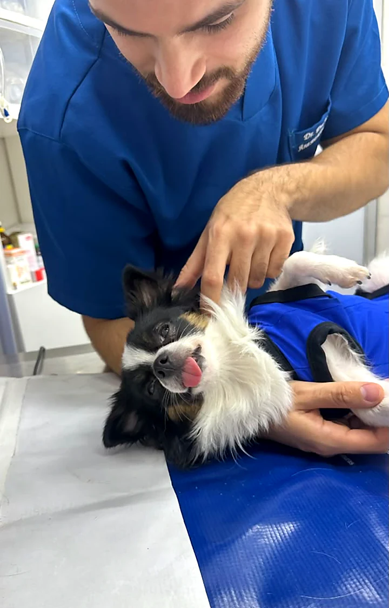
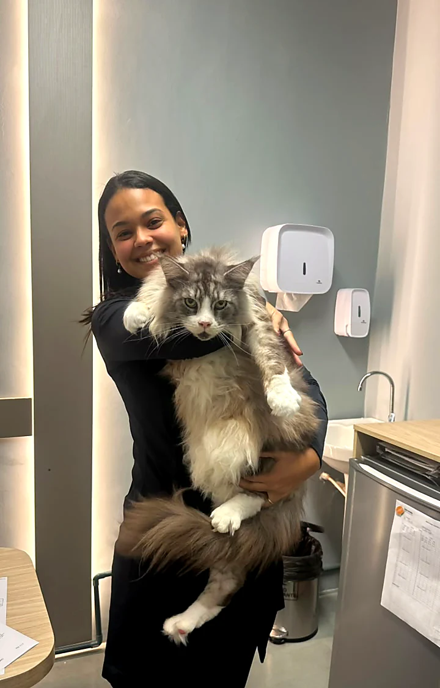

Especialidades
Cardiologia, dermatologia, nefrologia, pneumologia e nutrição com gastroenterologia atendem aqui dentro, na Rua Araguatins.
Agendar pelo WhatsAppConteúdo em revisão clínica pela Dra. Caroline Keffer · 27/09/2026